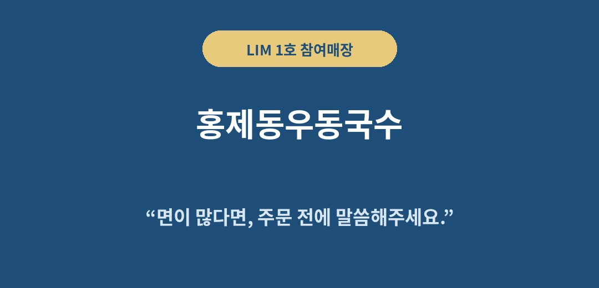
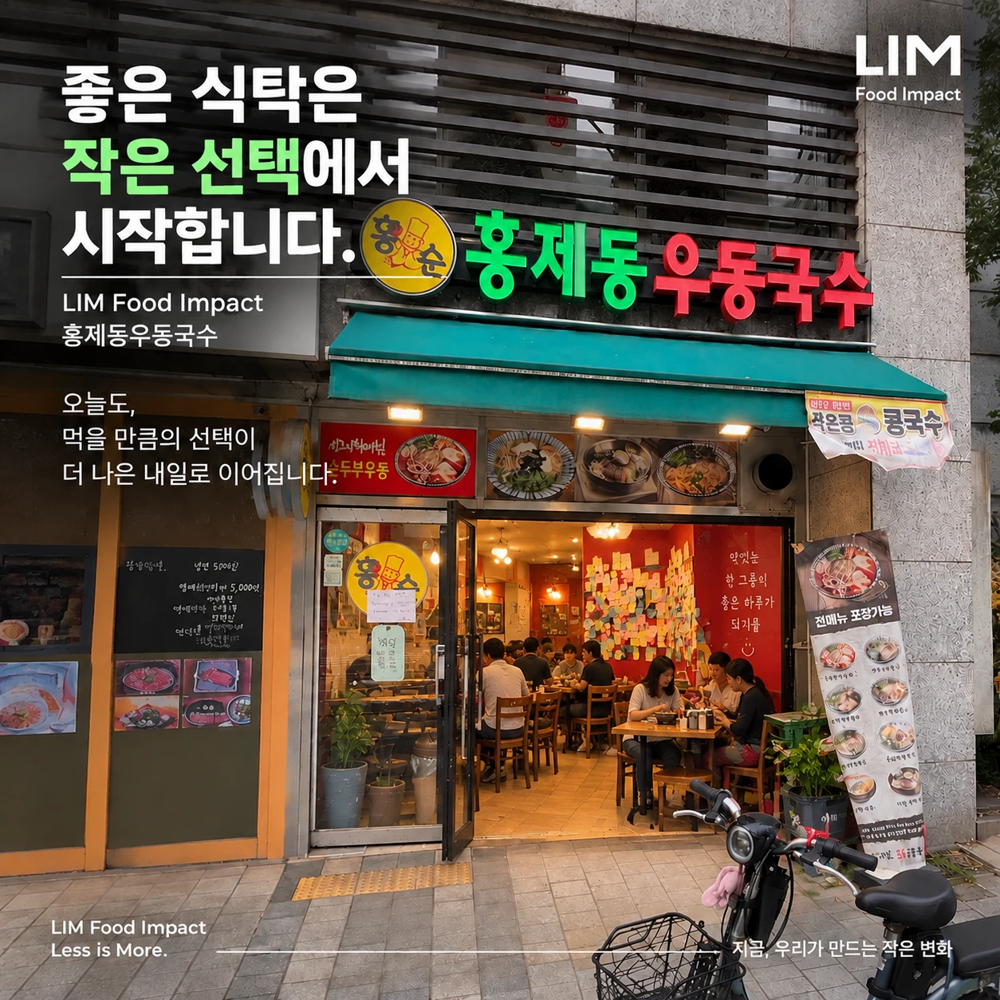
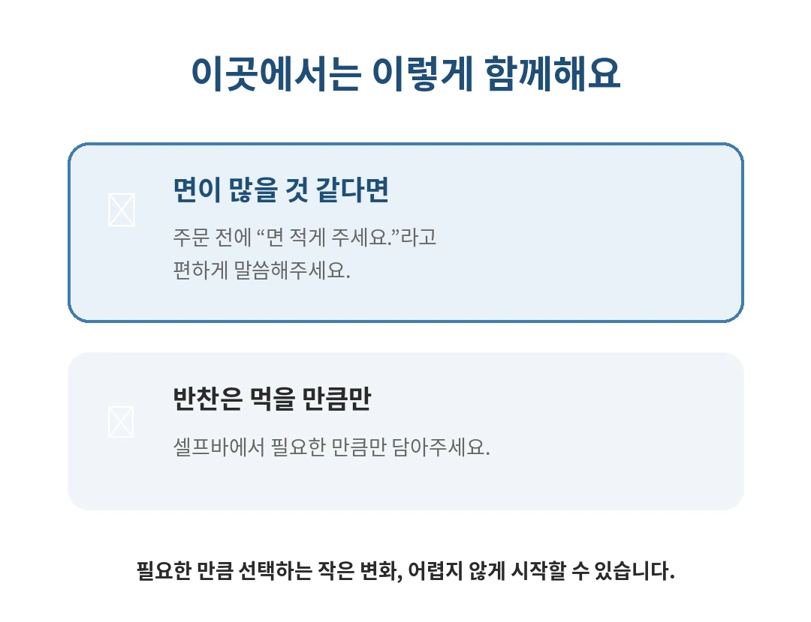
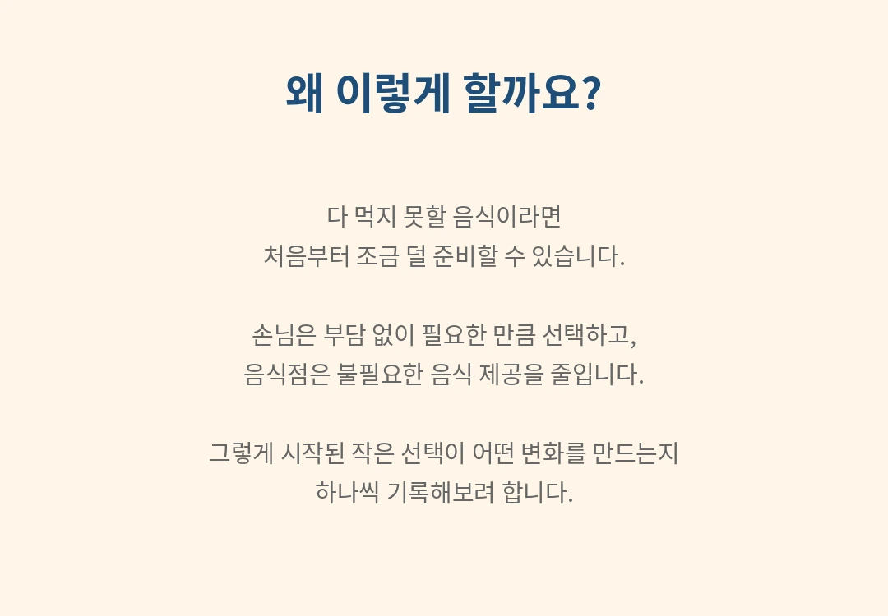
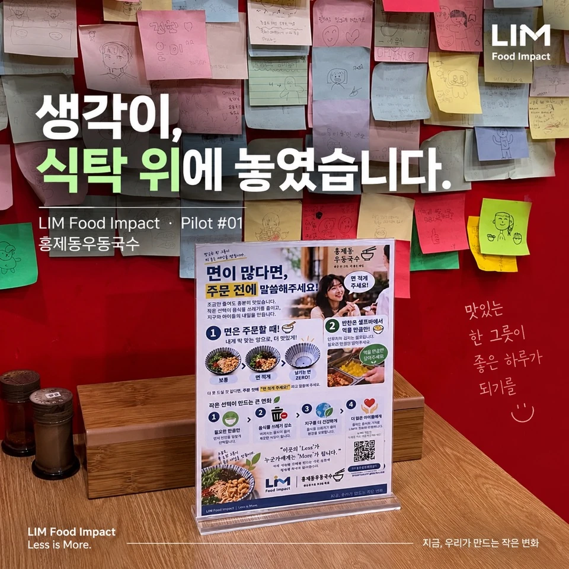
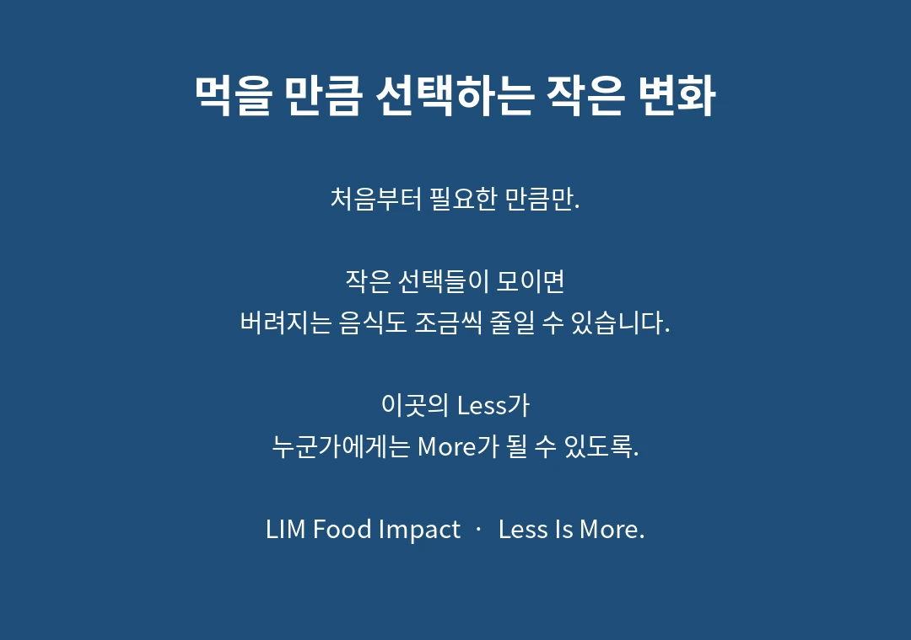

← 참여매장으로 돌아가기


LIM 1호 참여매장 · 홍제동우동국수



홍제동우동국수 실제 식탁에 놓인 LIM 안내문
아이디어와 문서 속에 있던 LIM이 홍제동우동국수의 실제 식탁에 놓였습니다.
거창한 장비부터 시작하지 않았습니다.
작은 안내문 하나와 손님의 한마디에서 시작합니다.
“면 적게 주세요.”
이 작은 선택이 실제로 어떤 변화를 만드는지 하나씩 기록해보겠습니다.

📍 네이버 지도에서 홍제동우동국수 보기